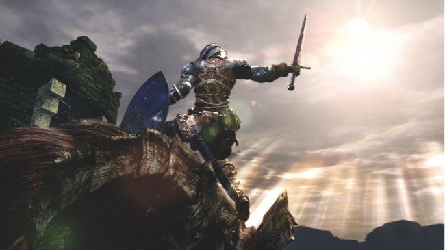
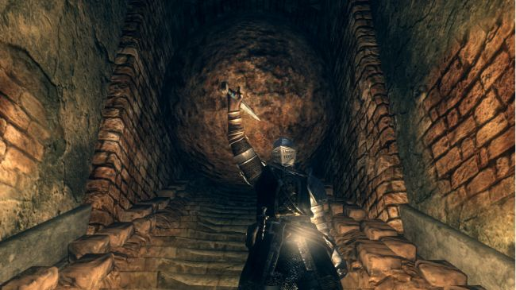
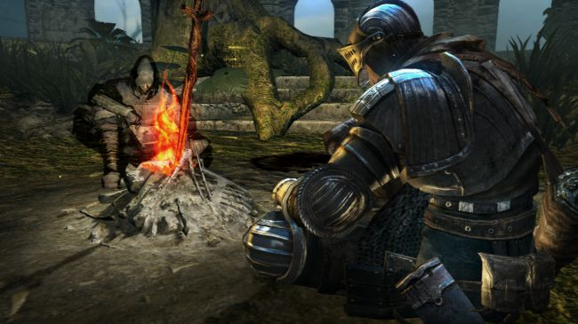
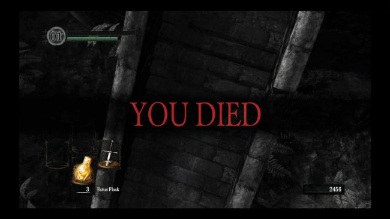
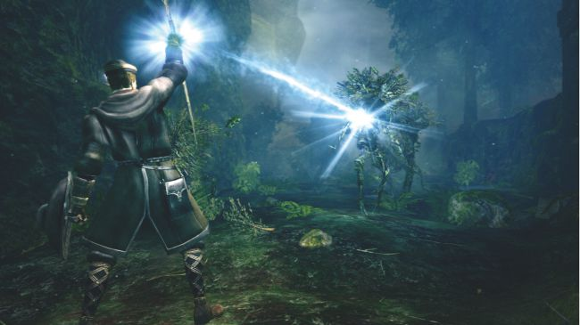
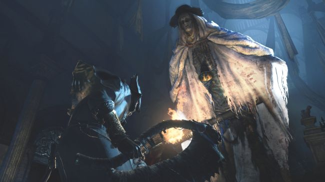
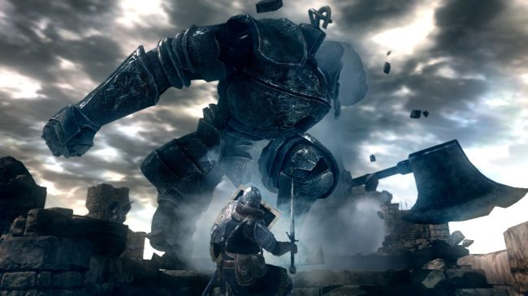
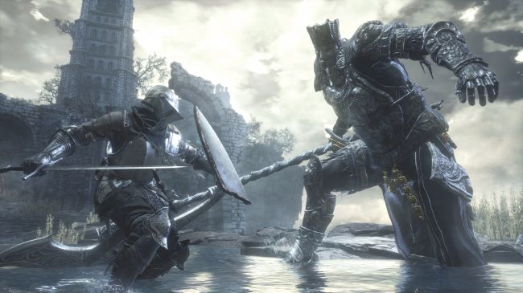
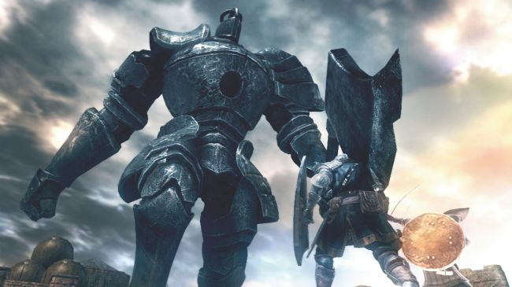
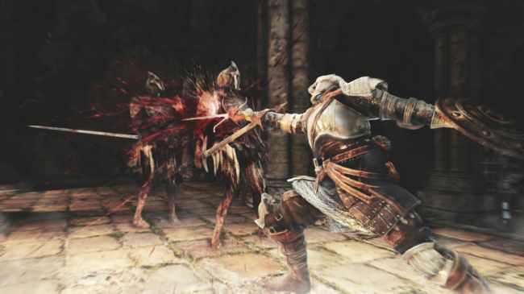

The classical epics from which Dark Souls takes so much inspiration share a common starting point: in medias res, right in the middle of the action. The Trojan War has been going on for years when the Iliad kicks off, and so too in Dark Souls does the chosen undead, the player character, awaken to a world-in-progress. The first of many differences, of course, is that this legend is your own. The hazy and often-ambiguous history of the game’s world is part of a larger theme, the thrill of exploration. Dark Souls is oft-cited as the best game ever made because it combines obvious qualities – great combat, amazing environments and bosses – with hidden but major changes to how an action-RPG works.
One principle is that you are told very little, but the game is full of learning situations. After waking in the Undead Asylum (named areas are a rare concession to concrete details) there are a few tutorial notes scattered around outlining the basic controls, then you’re directed into an enclosed space with a gargantuan hammer-wielding demon. You haven’t acquired your starting weapon yet.
Dark Souls’ difficulty can be (and often is) overstated by fans and detractors alike, but situations like this are why. Rather than being pancaked, the alert player will spot an open door beside the demon – and bravely run away.
Figuring this out is the first real tutorial: pick your battles. The Undead Asylum preps you for the ‘main’ world of Lordran with a mini-tour of adventuring techniques. Enemies are emaciated and weak, but can easily gang up and beat you down. Run up stairs without looking and you’ll get crushed by a boulder; check the wall it smashed through to find something.
Dark Souls is for cautious and curious alike, for players who want to follow their nose rather than be led down a pretty corridor, and the 3D map of Lordran has no comparison in gaming history. Centred on Firelink Shrine, where you ‘start’ after the Undead Asylum, Lordran is a seamless and interconnected series of areas with huge verticality – many parts are visible long before you reach them.
Firelink Shrine is so honeycombed it feels like there are more than three main routes out, and indeed there will be, but at the start following two of them will almost definitely see you die horribly. Figuring out the ‘right’ one to take is trial-and-error, which leads to the idea of death itself – in other games, never much more than a number.
The closest comparison is the conceit behind Groundhog Day. When you die (becoming ‘hollow’) in Dark Souls everything else resets, but you remember what happened – and have a chance to retrieve your ‘bloodstain’ containing previously collected souls and humanity (required to become human again). This touch is ingenious because such an extra chance to regain hard-earned currencies can and does become a massive fear factor. Dying in Dark Souls is intended as a learning experience, encouraging players to master the unfamiliar, but it’s also sometimes fruitless.
You roll off a bridge by mistake, take too many swings as a boss winds-up, or aggro a group of enemies in a rush. You misjudge a jump and splat, underestimate the deadliness of a torch, or sprint into a dark room without checking. You Died. Dark Souls is difficult and expects players to be able to conquer big challenges, and stay focused. But this is not ‘difficulty’ in the sense of learning complicated inputs, having lightning-fast reflexes, or even being especially brainy.
Dark Souls is about perseverance, determination, and adaptability. Whether you learn, or repeat the same mistakes. Not for nothing is Lordran dotted with the corpses of those who gave up. This world’s weakest enemies are clad in rags and wield sharp sticks, but will gut a cocky hero in an instant. Don’t even get me started on the dogs. And as you press further the immortal horde of knights, hollows and demons become more hard-hitting and merciless.
The other side to this equation is, of course, what the chosen undead can do. The player character can equip something in both arms (usually a shield and a weapon), two-hand their weapon for extra-damaging blows, parry enemy attacks and, most important of all, dodge-roll. But the possible equipment enables an enormous number of fighting styles.
The first time I played Dark Souls it was at a shuffling pace with shield permanently up, occasionally poking things with a spear. Since then I’ve played as a ninja-flipper with dual blades, a two-handed halberd master, a parry-based poison assassin, a glass cannon mage, a suicide pyromancer, a half-dragon nudist, a holy prankster that specialised in pushing other players off ledges, and a club-wielding barrel-boy that can go toe-to-toe with most bosses. The point isn’t variety for the sake of it, but the range of options players have and can build into.
And so, as the monsters gradually grow in size and aggression, your understanding of the core principles – defending obvious blows, picking a moment to attack – begins to deepen into timed dodges and devastating counterattacks. The most incredible selection of bosses ever devised for a game are organised in another progression. Early examples like the Asylum Demon and Taurus Demon seem huge and hit hard, but are relatively slow and clumsy opponents – while the dreaded Capra Demon is barely bigger than you, but fights in a tiny room alongside two dogs.
Every encounter has unique tactical considerations. The Bell Gargoyles crowd and batter foolhardy players. Spider-witch Quelaag’s lower body is vulnerable, but her beautiful upper half guards it with flaming sword flurries and deadly pyromancy. The Iron Giant is huge, hulking, and fought atop a small pillar. The Gaping Dragon tries to eat you, corrodes equipment, and uses its long body to enormously damaging effect. Ceaseless Discharge (yes, really) is a magma-spewing giant trying to swat a fly. The Great Grey Wolf Sif fights with her dead master’s sword clenched in her teeth, and even when wounded struggles to the last.
And this is all early stuff. The focus of Dark Souls’ first half is reaching Anor Londo, the city of the gods, a vision of Olympus realised in High Gothic architecture and framed by the radiant sun. Here wait Ornstein and Smough, my favourite boss fight ever, a classic thin man/fat man combination that alternately whittle at and smash the player. Smough’s gigantic hammer collapses the room’s pillars while Ornstein zips back and forth with piercing lance strikes. Get one down, and the other ‘absorbs’ his fallen companion and becomes a super version. Everything about this fight is climactic, and that’s because you’re meant to suspect nothing.
This isn’t the place to delve into the rabbit-hole of Dark Souls lore, other than to say it uses a revolutionary combination of storytelling techniques that are a delight to uncover, and plays on the expectations of its audience. You can play Dark Souls entirely straight, do as you’re told to do by various characters, and it will meet such expectations. But it’s also possible to make your own choices, start piecing facts together, and come to some startling conclusions – as well as discover much more of Lordran.
The hidden areas are, rather wonderfully, both well-hidden and well worth the effort to find. Dark Souls’ original prototype, a level made as a microcosm before full development began, here becomes The Painted World of Ariamis – which is where the gods hide what is forbidden. It is filled with the misshapen, the rejected, and the re-purposed, packed with secret cubbyholes and unexpected horrors, the masonry weathered beyond time. Finding this, and it takes some effort, feels like discovering Atlantis.
There are so many other sides to Dark Souls. Take its divisive online feature – brilliant precisely because it takes a little bit of control away from players to create something new. At almost any time while playing Dark Souls, as long as your character is human rather than hollowed, another online player can ‘invade’ your world. The invader gets humanity for kills, while the host can either stand and fight or run towards the nearest boss gate for a dishonourable escape.
The dynamic this set-up creates is unmatched across other multiplayer modes. It’s an instantly personal moment, because the objective of invading another player’s world is, plain and simple, to kill them. There are other considerations too: invaders won’t be attacked by enemies, but the host still has to worry about them. Invaders can only use humanity items to heal, while hosts can drink from their plentiful Estus flasks. It’s not an even playing field, and maximising the advantages on each side – much like the combat system as a whole – comes down to strategy and style.
Online also gives any player the chance to get help with troublesome areas through ‘summons’ - other players who offer to help take out particular bosses. There’s much more, like the covenants that set players against one another in quirky manners, the way some players insist on ‘duelling’ rules ignored by most, or the ‘gank squads’ that entrap unsuspecting invaders. Or the way Dark Souls, on completion, rolls over into NG+ and makes everything a little harder and a lot more rewarding, allowing players to more freely explore the online realms, the side-stories and upgrade much more equipment. This is a game that, as you begin to love it, blossoms further still.
Dark Souls kindles the flame for its devoted fans, and such seemingly endless depth is why. It’s an adventure you feel in charge of, one that can be tackled in any number of ways. It’s a world of options and styles that allows players a surprising level of expression in how they confront its challenges. It’s for good reason that the community developed a wing dedicated to dress sense and style – the fabulous Fashion Souls.
But more than anything else, Dark Souls’ emphasis on the player is what pays off. An achievement is not a ping and a 20G popup. An achievement is mastering a weapon, invading another player successfully or, over hundreds of hours, piecing together an incredible tale. It’s dying countless times and coming back to win. Dark Souls has respect for players, but expectations too, and over time weaves a history around you. You decide whether that’s comic, tragic, heroic or any number of other things – but as a whole it’s simply epic.